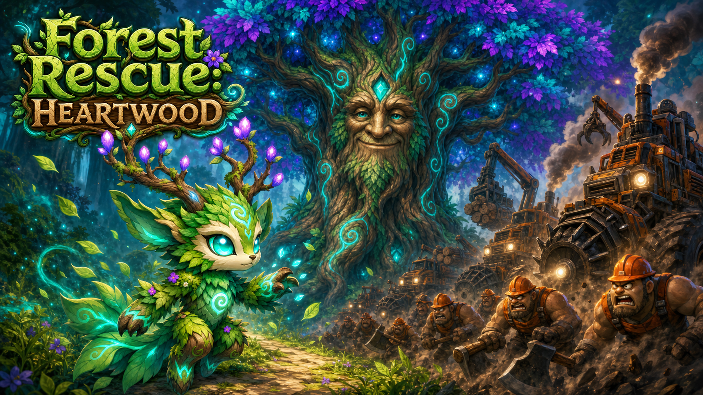
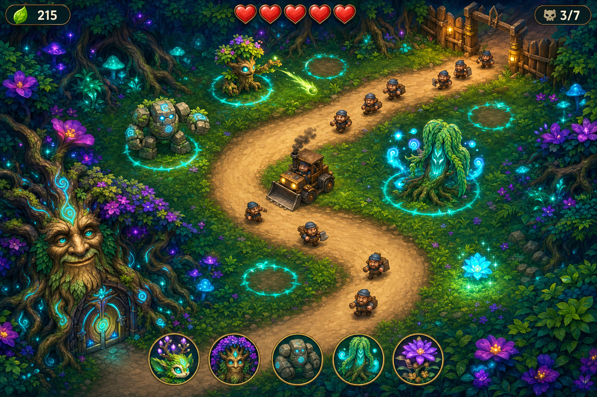
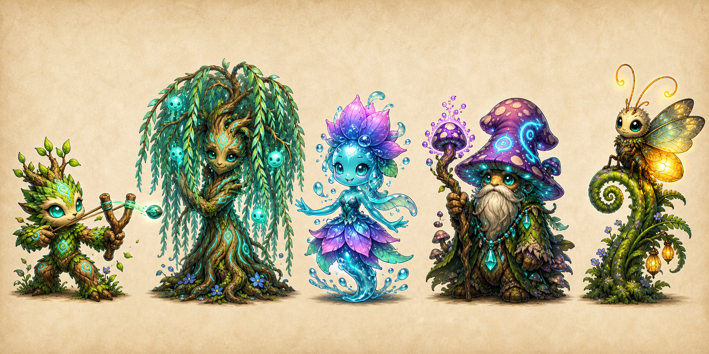
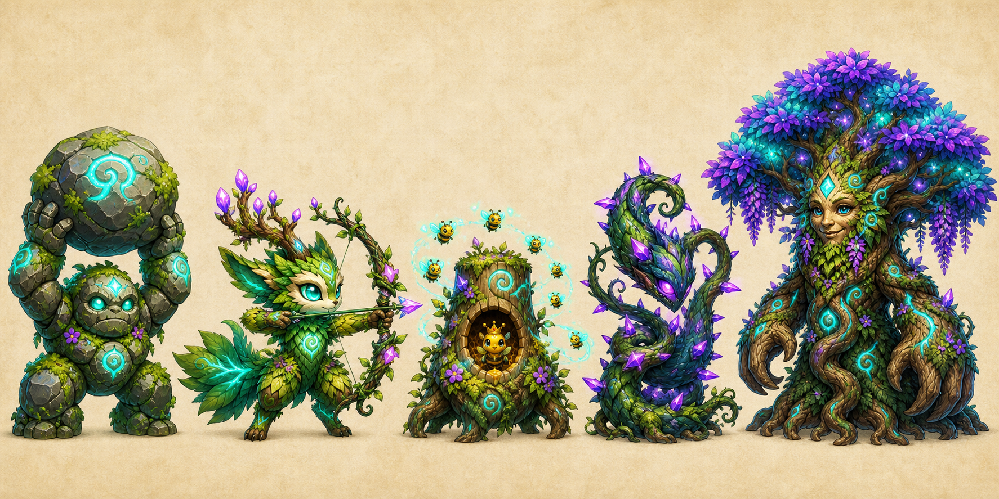
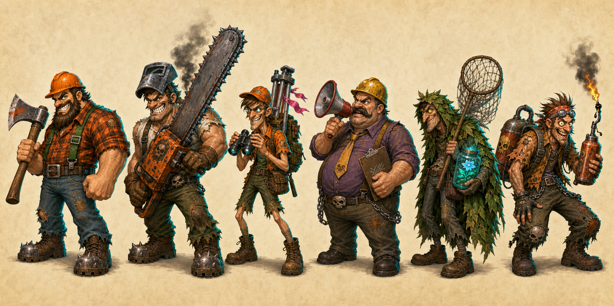
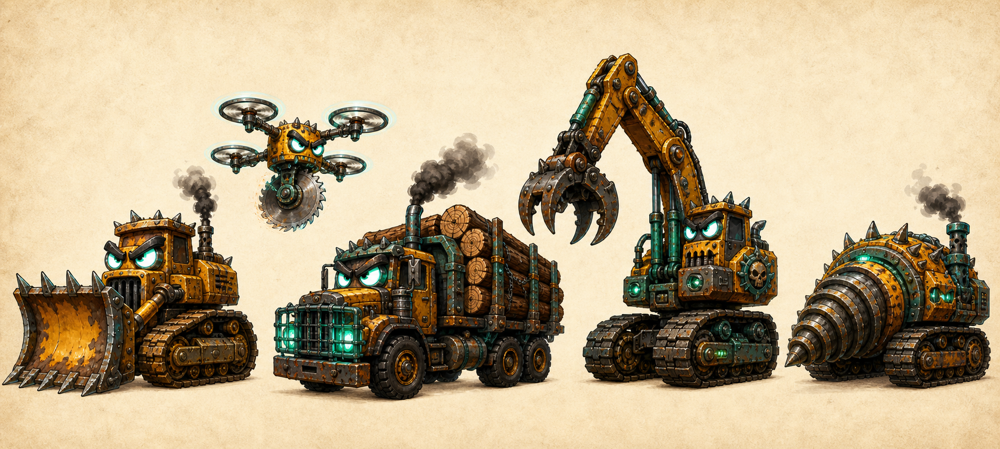
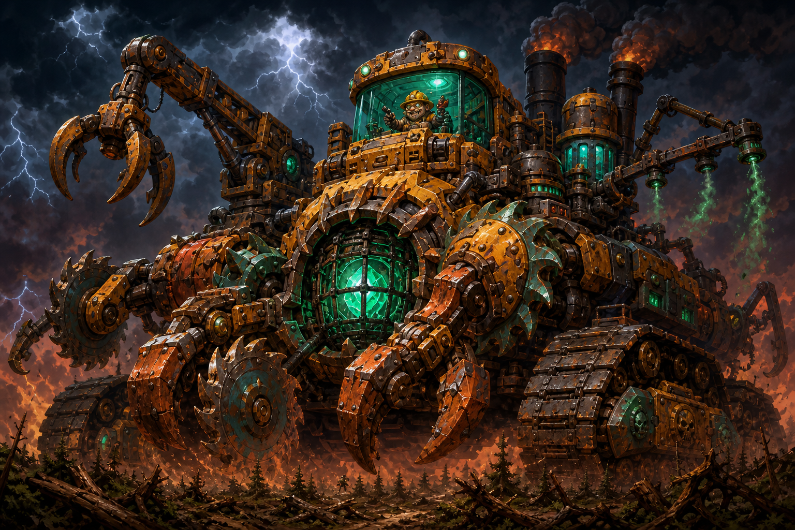
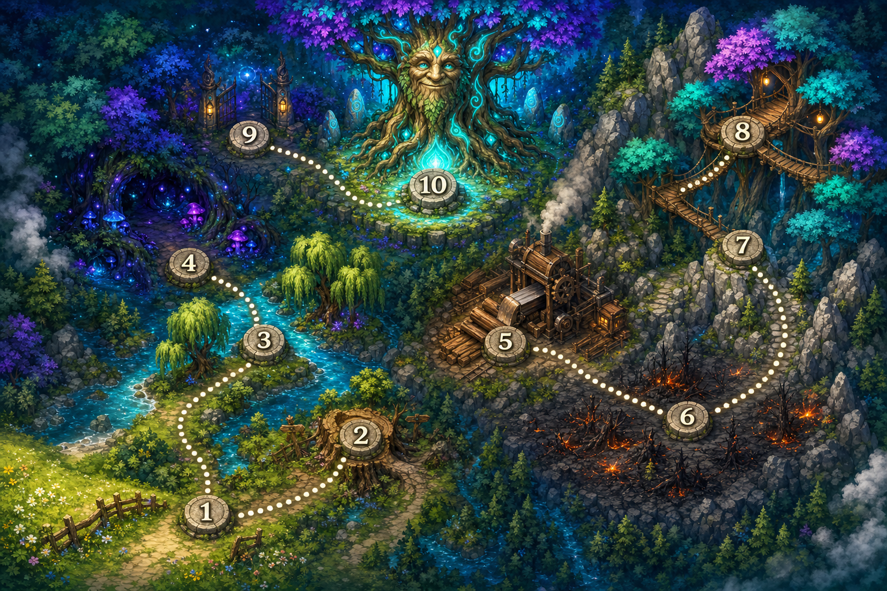
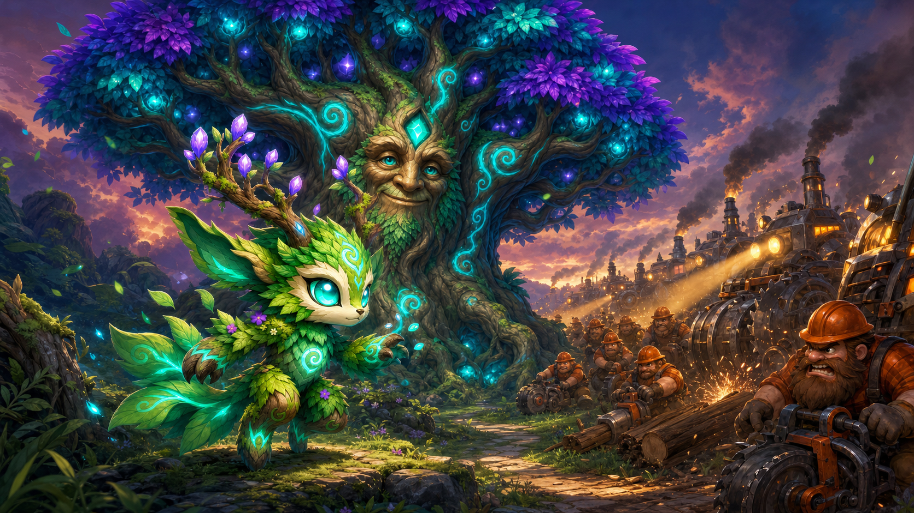

Forest Rescue: Heartwood
A tower defense reimagining of Forest Rescue — the magical creatures of the forest rise to defend their home.

Overview
In Forest Rescue, the player held four lanes against eight waves of loggers and saved the jungle heart. Heartwood is the escalation: the logging company returns with an industrial campaign, and the battlefield opens up from straight lanes into winding forest paths. Instead of planting one kind of magic tree, the player awakens the ancient magical creatures of the forest — each a living "tower" — and guides the Guardian through a ten-level journey to the Heartwood itself.
What carries over vs. what changes
| System | Forest Rescue (lane defense) | Heartwood (tower defense) |
|---|---|---|
| Battlefield | 7×4 grid, enemies march right→left in lanes | Winding waypoint paths; enemies follow the trail toward the Heartwood gate |
| Placement | Any free grid cell | Fixed fairy rings (mushroom circles) beside the path — big, readable tap targets |
| Units | One tower type (Magic Tree) | 10 defender creatures, 3 upgrade tiers each, distinct roles |
| Economy | Mana regen + tappable mana flowers | Same, plus kill bounties; Poachers can steal flowers |
| Damage to player | Leaked enemy = −1 of 5 jungle hearts | Identical — 5 hearts per level |
| Enemy behavior | Loggers chop trees blocking their lane | Human enemies still stop to chop defenders near the path; machines just roll on |
| Structure | One endless map, 8 waves | 10 handcrafted levels with story, bosses, and per-level gimmicks |
| Player agency | Placement + flower tapping | + upgrades, uprooting, Guardian spells on cooldown |
Core Mechanics
The path and the fairy rings
Each level defines one or more trails — waypoint paths from the loggers' camp to the Heartwood gate. Beside the trail sit fairy rings: glowing mushroom circles where the Guardian can awaken a defender. Rings are finite and positioned deliberately; choosing which creature to wake in which ring is the core decision. One special placement breaks the rule: the Thornvine Bramble is planted directly on the path as a living roadblock.

Mana — the one resource
- Trickle: mana regenerates slowly over time (≈5/s, as in the original).
- Mana flowers: bloom at random near the trail; tap for +25 before they wilt. Skilled players are rewarded for looking away from the action.
- Bounties: every kill drops mana (8–30 depending on enemy).
- Spent on: waking defenders, upgrading them (two tiers), and casting Guardian spells. Uprooting a defender refunds 70%.
Defenders take damage
The signature Forest Rescue twist, kept and sharpened: human enemies (Loggers, Brutes, Arsonists) will stop and chop any defender within reach of the path. Defenders have HP and can be destroyed. This creates a rhythm classic TD lacks — a strong forward defender is also a target, and support creatures that heal (Grove Matriarch) or distract choppers (Hive Hollow bees) earn their cost. Machine enemies never stop: they crush Brambles and roll on, so walls alone can't hold them.
Waves, hearts, stars
- Levels run 8–16 scripted waves with a preview of the next wave's composition.
- Each leaked enemy costs one of 5 jungle hearts; at zero the level is lost.
- End-of-level stars: 3★ = all hearts kept, 2★ = 3–4 hearts, 1★ = won at all. Stars unlock optional Elder Trials (remixed challenge variants of cleared levels).
The Defenders (Towers)
Ten magical creatures of the forest, awakened over the campaign. Every defender has three tiers — awaken (T1) and two paid upgrades (T2/T3) — and a clear role, counter, and weakness. Costs are in mana and tuned around the original game's economy (Magic Tree = 50).

🌱 Sprig Sentinel
50 manaA sapling treant with a slingshot arm — the direct descendant of the original Magic Tree. Cheap, dependable seed-bolts (35 dmg / 1.1s). The backbone of every early maze.
Weak vs: armor, swarms. Shines vs: everything early.
🌿 Thornvine Bramble
35 manaPlanted on the trail. A coiled, thorny living wall (220 HP) that slows and pricks everything squeezing past. Human enemies stop to chop it; machines crush it instantly — it buys time, not immortality.
Weak vs: Bulldozers, Brutes. Shines vs: fast runners, buying time in front of DPS.
🍃 Wisp Willow
90 manaA weeping willow sheltering a family of teal wisps. Lobs wisp-bolts (30 dmg) that arc to a second target — and it's the first defender that can touch flying enemies.
Weak vs: single tanky targets. Shines vs: drones, clustered crews.
💧 Dewdrop Nymph
75 manaA giggling water sprite. Splashes chilling mist (12 dmg, 35% slow for 2s, small AoE), douses burning defenders, and rusts machines.
Weak vs: raw HP (low damage). Shines vs: Arsonists, armored machines, boss slowing.
🍄 Mushroom Shaman
80 manaAn ancient mycelium elder under a spotted cap. Puffs spore clouds over the path — enemies inside take stacking poison (10 dps, lingers 4s after leaving).
Weak vs: fast enemies that sprint through. Shines vs: dense slow waves, softening for DPS.
✨ Firefly Beacon
60 manaA giant gentle firefly on a fern perch. Deals no damage — its warm glow grants nearby defenders +20% range and damage, and reveals cloaked Poachers.
Weak vs: being your only defender. Shines vs: Poachers; anchoring a killzone.

🪨 Mossback Golem
120 manaA boulder-hurling stone sleeper woken from the cliffs. Slow, enormous lobs (90 splash dmg / 2.8s) that crack armor — the machine-killer.
Weak vs: fast singles, drones. Shines vs: Bulldozers, Excavators, clumps.
🦊 Faefox Archer
85 manaKin of the Guardian — a leaf-fox with a vine bow. Very fast leaf-arrows (22 dmg / 0.4s), double damage against anything flying. Long range, elegant, fragile.
Weak vs: heavy armor. Shines vs: Buzzsaw Drones, fast runners.
🐝 Hive Hollow
100 manaA hollow stump ruled by a tiny crowned queen. Releases a bee swarm that chases enemies along the path (6 dps) — and choppers stop chopping to swat at bees, protecting your other defenders.
Weak vs: machines (bees can't sting steel). Shines vs: chopper crews, protecting Brambles.
🌳 Grove Matriarch
200 manaAn ancient flowering treant, eldest daughter of the Heartwood. Root-smash (150 AoE dmg / 3s), heals nearby defenders 3 HP/s, and her presence slows enemies who dare approach. Limit: one per level.
Weak vs: being everywhere at once. Shines vs: the last stand in front of the gate.
The Enemies
ChopCo Industries fields two families: crews (humans — squishier, but they stop and chop your defenders) and machines (armored, relentless, immune to distraction). Every enemy has a defender that counters it cleanly; difficulty comes from mixtures.

🪓 Logger
115 HP · normalThe classic. Marches steadily; stops to chop any defender in reach (28 dmg/swing). Bounty 8.
Counter: any DPS; bees make him forget his job.
⚙️ Chainsaw Brute
180 HP · normalA wall of muscle with a smoking chainsaw. Chops three times faster than a Logger and beelines for Brambles. Bounty 12.
Counter: Hive Hollow distraction + focused fire before he reaches your line.
🔭 Surveyor
60 HP · fastSprints ahead of waves planting marker flags: a marked defender takes +25% damage from choppers until the Surveyor dies. Bounty 6.
Counter: Faefox Archer picks him off before the flag drops.
📢 Foreman
220 HP · slowNever lifts a tool himself. His megaphone aura drives nearby enemies +25% faster. Kill the middle manager first. Bounty 15.
Counter: Mossback splash hits him inside his own crowd.
🥷 Poacher
90 HP · fastInvisible outside Firefly glow. Ignores the gate — he sneaks to your mana flowers, jars them, and runs home. Kill him to drop the jar (+40 mana); let him escape and the flower economy suffers. Bounty 10.
Counter: Firefly Beacon reveals; anything fast kills.
🔥 Arsonist
100 HP · normalFlicks a drip torch at defenders as he passes: burning defenders take 5 dps for 8s unless doused. Fires can spread to adjacent fairy rings on scorched maps. Bounty 10.
Counter: Dewdrop Nymph douses; Cleansing Rain clears everything.

🚜 Bulldozer
260 HP · slowThe returning heavyweight. Armor plates shrug 10 damage off every hit; crushes Brambles without slowing down. Bounty 15.
Counter: Mossback Golem cracks it open; Nymph rust strips the plates.
🚁 Buzzsaw Drone
70 HP · fastSkips the path entirely — flies a straight line over terrain toward the gate. Only Wisp Willow, Faefox Archer, and Beacon pulses can touch it. Bounty 8.
Counter: Faefox Archer (2× vs air).
🚛 Diesel Hauler
320 HP · slowBelches a rolling smoke cloud: defenders inside lose 30% range. Often escorts crews who chop your suddenly-shortsighted line. Bounty 18.
Counter: long-range Golem lobs from outside the smoke; Rain clears it.
🏗️ Excavator
700 HP · very slowA rolling fortress (−20 per hit). Doesn't attack — it simply arrives, and everything you have must already be in place. Bounty 30.
Counter: rust + poison stacking + Golems; slows are your real weapon.
🌀 Tunnel Borer
240 HP · slowPeriodically drills underground for 3-second stretches — untargetable, skipping whole killzones. Surfaces with a shudder you can learn to time. Bounty 20.
Counter: layered defense along the whole trail, not one killbox; Bramble grip catches it surfacing.
☠️ Sprayer Rig
280 HP · slowLate-campaign horror: hoses herbicide at fairy rings as it passes, putting the defender there to sleep for 5s. Bounty 20.
Counter: kill it before it reaches your core rings; redundant coverage.
Bosses
🪚 The Grinder
3,000 HPA mobile wood-chipper the size of a barn. Eats Brambles to heal, and spits sawblade shrapnel that damages defenders near the path. At half health it enrages and speeds up.
Lesson it teaches: stop leaning on walls; kill with sustained ranged damage.
🕷️ Iron Canopy Crawler
4,500 HPA spider-legged harvester that walks the trunks above the path, out of most defenders' reach, launching drone swarms and web-cocooning one defender at a time.
Lesson it teaches: anti-air isn't optional; Faefoxes and Willows carry.
🏭 The Terraformer
12,000 HP · 3 phasesAxel Grind's cathedral-sized crawling factory. Advances down the trail for the entire level, spawning crews from its belly, spraying herbicide, and unleashing sawblade storms. Between phases its hull opens, exposing the caged Seed of Light at its core — the burst-damage windows that decide the fight.
Lesson it teaches: everything at once. This is the exam.

Guardian Spells
The Guardian — the leaf-fox hero of Forest Rescue — doesn't sit in a fairy ring. It runs the battlefield, and the player channels its power as tap-anywhere spells with mana costs and cooldowns. Spells are earned as story rewards, not bought.
🌾 Root Snare
45 mana · 25s cdRoots erupt in a target circle, holding all ground enemies in place for 2 seconds. The panic button when a Brute reaches your Matriarch.
🌧️ Cleansing Rain
60 mana · 40s cdA soft rain over the whole map: extinguishes every burning defender, heals all defenders 30%, and washes away smoke clouds. The answer to Arsonist + Hauler waves.
🍂 Nature's Wrath
90 mana · 60s cdA spiraling storm of razor leaves and light crashes into a target area — 200 damage to everything, double to machines. The Guardian's answer to the Terraformer's open core.
The Campaign — Ten Levels
One valley, ten battles, escalating from a torn fence at the meadow's edge to the roots of the Heartwood itself. Each level introduces at most one defender and one enemy, has a signature gimmick, and advances the story.

Meadow's Edge
The fence ChopCo tore down is the starting line. Teach placement, upgrading, and the golden rule: your creatures can be hurt.
Old Stump Crossroads
First taste of divided attention. The merge point is the obvious killzone — but Surveyors marking your defenders punish tunnel vision.
Whispering River
The trail snakes; the drones don't. Air cuts the corner your maze depends on, forcing the first real coverage decisions.
Mushroom Hollow
The map is dark outside fairy-ring glow and Beacon light. Poachers slip through shadows toward your mana flowers. Light placement is the level.
The Sawmill Clearing
Assault on the forward sawmill. The Grinder punishes the wall-heavy strategies the first four levels rewarded — adapt or be mulched.
Ashfall Scar
ChopCo burns what it can't be bothered to cut. Fire jumps ring to ring; the Nymph shifts from nice-to-have to load-bearing.
Boulder Pass
The switchbacks give huge path length — which Borers ignore. Excavators arrive as slow-rolling exams of your total damage output.
Canopy Highway
The battle leaves the ground. Drone swarms and the trunk-walking Crawler flip the priority list — the sky is the front line now.
The Long Night
The full siege. Every enemy type, back to back, with the Matriarch as the anchor you build the last stand around.
Heart of the Forest
The Terraformer crawls the spiral for the whole level while its belly spawns crews and its arms disable rings. Between its three phases the hull opens — burn the exposed core with everything, including the Heartwood's own charged Pulse.
Difficulty & pacing curve
| Level | Teaches | Tests |
|---|---|---|
| 1–2 | Placement, upgrades, chopping, split paths | Basic economy discipline |
| 3–4 | Air coverage, detection, light management | Coverage trade-offs |
| 5 | — (boss) | Everything from Act I; anti-wall play |
| 6–7 | Status management (fire), armor breaking, layered defense | Reacting to map hazards |
| 8 | Air-first building | Priority inversion |
| 9 | — (endurance) | Full toolkit under sustained pressure |
| 10 | — (final) | Mastery; burst windows and spell timing |
The Story
Three acts across ten levels, told in short pre/post-level vignettes (two or three lines of text over a painted panel — no cutscene tech needed). Tone: warm, funny, a little melancholy in the middle, triumphant at the end. Nature wins by growing, not by conquering.
Act I — The Return (Levels 1–4)
After the failed clear-cut of the jungle heart (the events of Forest Rescue), ChopCo returns with lawyers, machines, and a valley-wide clearance contract. The Guardian — older, no wiser, still adorable — realizes it cannot hold every path with seed-slinging saplings alone, and begins waking the old defenders: the wisps who waited in the stumps, the nymph scrubbing the grey out of her river, the shaman who never really stopped talking.
Act II — Project Terraformer (Levels 5–7)
The sawmill manifests reveal the truth: the timber isn't lumber, it's fuel. Axel Grind is building the Terraformer — a machine that doesn't harvest a forest but replaces it, converting living valley into ChopCo property at a tread's pace. The middle act is the dark one: the Scar, the ash, the acorn. But it's also where the forest's deepest strength wakes — the stone-sleepers of Boulder Pass, who remember when the valley had no name.
Act III — The Last Grove (Levels 8–10)
The fox tribes return, the Matriarch takes the gate, and the workers — spared again and again by a forest that only ever fought the machines — start walking off the job. The final battle reveals the engine of everything: a stolen Seed of Light, the first tree Axel's family felled, caged and burning for three generations. The Guardian's victory is an act of release, not destruction. The Terraformer stops because its heart is finally allowed to stop burning.

Post-credits
Snow. Pine trees. A different valley, a different fence being torn down — and a small creature of frost and needles opening one eye. Forest Rescue: Winterroot?
Art Direction
Direct continuation of Forest Rescue's established look: vibrant painterly illustration, chibi-proportioned forest creatures, bioluminescent teal + purple magic against the machines' rust-orange + oily grey. All concept art on this page was generated with gpt-image-2 using the shipped Forest Rescue sprites as style references — the same pipeline (generate → chroma-key → sprite) extends to production assets.
- Faction color language: the forest glows cool (teal runes, purple blossoms); ChopCo glows hot (headlights, sparks, embers). Readable at a glance on a phone.
- Silhouette first: every defender and enemy must be identifiable as a ~64px sprite. The lineup sheets above are silhouette tests as much as mood pieces.
- The path is the canvas: sandy trail on dark bioluminescent undergrowth — maximum contrast where the action happens.
- UI stays diegetic-ish: leaf-framed mana counter, wooden wave banner, hearts as in the original.
Tech Notes (for the eventual build)
Heartwood is deliberately buildable as an evolution of the existing forest-rescue
codebase — vanilla ES6, single canvas, no dependencies, no build step.
| Existing piece | Fate |
|---|---|
| Fixed-timestep loop, DPR-aware canvas, resize handling | Reused as-is |
WebAudio AudioKit (generated SFX, mute) | Reused; add per-defender voices |
| Sprite loading with drawn-shape fallback | Reused — keeps the game playable with zero assets |
| Pointer events, drag-plant, big tap targets | Reused; drag now previews range circles on fairy rings |
Lane logic (lane, x -= speed·dt) | Replaced by waypoint paths: each enemy tracks distance t along a polyline; position = interpolation |
| Grid cells | Replaced by per-level data: { paths: [[x,y]…], rings: [{x,y}…], waves: […] } — levels become JSON, enabling fast iteration and community maps later |
Single Tree class | Becomes a Defender base + data-driven stats table (the card stats above translate 1:1) |
| Mana flowers, hearts, wave banner | Reused unchanged — they are the brand |
Suggested scope for a first playable: levels 1–3, defenders 1–4 (Sentinel, Bramble, Willow, Nymph), enemies Logger / Surveyor / Brute / Drone. That slice exercises every new system (paths, rings, upgrades, air) with minimal content.